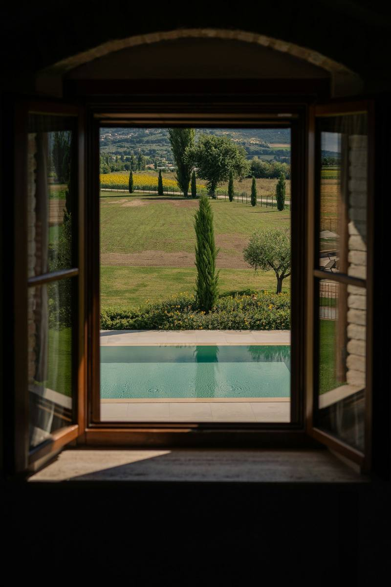

Estrutura e lazer
Tudo para uma estadia tranquila
O que o hotel oferece aos hóspedes: piscina, jardim, café colonial, estacionamento e Wi-Fi.
Comodidades do hotel
Piscina
Piscina ao ar livre cercada de jardim, aberta das 8h às 20h, com espreguiçadeiras para a tarde toda.
Jardim
Canteiros de hortênsias e flores da estação, caminhos de cascalho e mesinhas à sombra.
Café colonial
Servido até as 10h, com pães, bolos, queijos, frios, frutas, geleias caseiras, café e suco.
Estacionamento
Vagas gratuitas para hóspedes, ao lado do hotel.
Wi-Fi
Internet sem fio gratuita em todo o hotel, inclusive no jardim.
Recepção
Atendimento todos os dias, das 7h às 22h. Check-in a partir das 14h e check-out até as 12h.

Café da manhã
O café colonial
Na mesa há pão quente, bolos caseiros, queijos e frios da região, frutas, geleias e café coado na hora.
É servido todos os dias até as 10h e já está incluso na diária de qualquer quarto.
Galeria
Conheça o hotel por dentro e por fora
Clique ou toque em uma foto para ampliar.
Day use
Piscina e jardim por um dia
Não está hospedado? Passe o dia no nosso quintal: piscina, espreguiçadeiras e jardim das 9h às 17h, por R$ 60 por pessoa. Não inclui refeições, e o café colonial avulso custa R$ 35.
